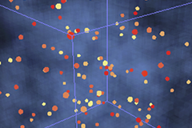
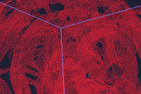
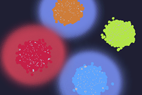

BSim Overview
Agent-based modelling tool for bacterial populations in systems and synthetic biology
BSim is an agent-based modelling tool designed to allow for the study of bacterial populations. By enabling the description of bacterial behaviours, it attempts to provide an environment in which to investigate how local interactions between individual bacterium leads to the emergence of population level features, such as cooperation and synchronisation.
An overview of the main feature of BSim are described below:
- Realistic 3D Environment - accurate physics, brownian forces and beautiful 3D visualisations provided as standard.
- Built-in Bacterial Traits - includes models from the scientific literature for chemotaxis, replication and vesicle production.
- Gene Regulatory Networks (GRNs) - model bacterium dynamics using GRNs described as sets of ordinary differential equations or user defined rules.
- Complex Micro-Scale Structures - describe the intricate boundaries of the experimental set up, and use these partitions to constrain movement or alter behavioural characteristics.
- Coarse Graining of Simulations - from individual molecules to continuous chemical fields, choose the level of representation appropriate to your question.
- Extendible and Modular Design - every aspect of BSim can be extended or replaced as required allowing for additional knowledge to be incorporated with minimal impact.
- Cross Platform - by using Java, BSim models can be run on all major systems (Windows, Linux and Mac OS X).
In Action
What is BSim being used to study?

Synchronisation of Coupled Repressilators

Complex Micro-Scale Environments

Multicellular Computing in Synthetic Biology
For more examples of how BSim is being used in research and education check out the Gallery »
Awards
BSim in the news
BSim began life as part of the BCCS-Bristol entry into the International Genetically Engineered Machines (iGEM) competition and played a major role in several awards:
- iGEM 2010 agrEcoli - Overall 2nd Runner Up, Best Food or Energy Project and Gold Medal.
- iGEM 2009 Vesecure - Best Model Prize and Gold Medal.
- iGEM 2008 Bacto-Builders - Best Model Prize and Bronze Medal.
Referencing
Making use of BSim in your work?
If you have made use of BSim in academic or commercial work, the project can be referenced using the following paper:
Licensing
Distribute and build on our work
BSim is distributed under the Open Source Initiative (OSI) recognised MIT licence. More details »